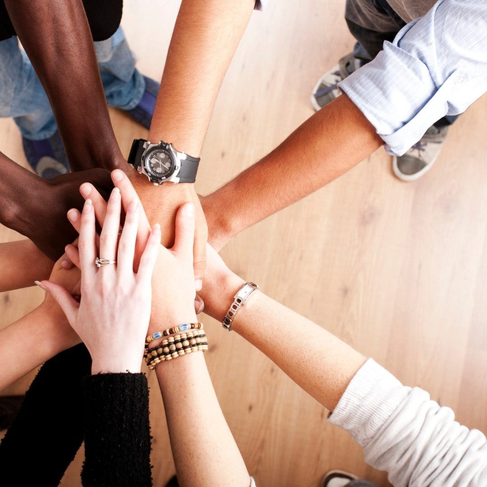
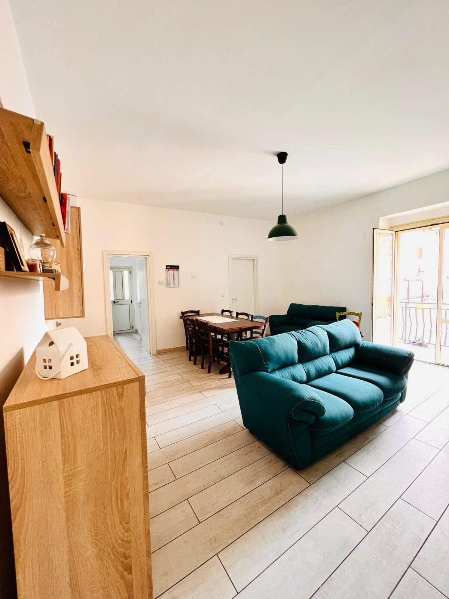
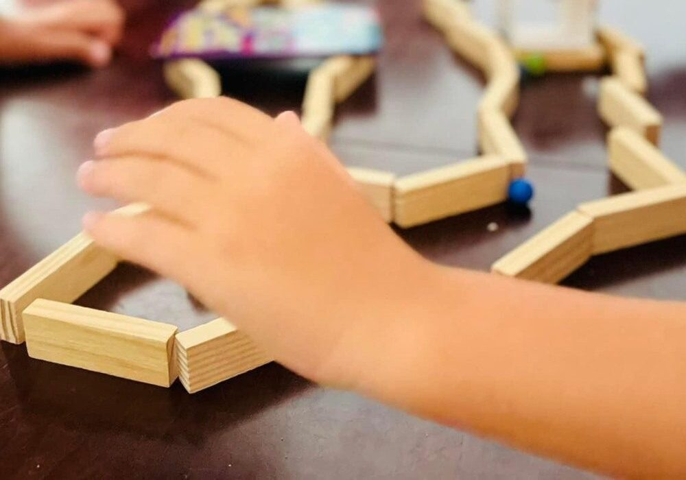
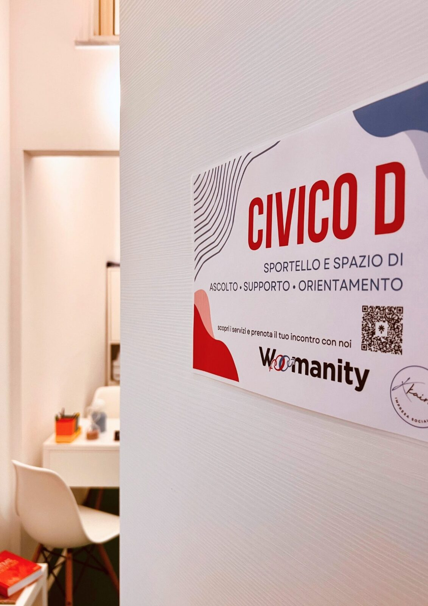
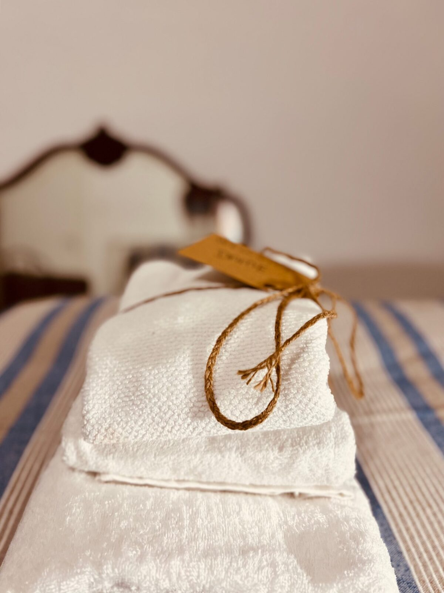
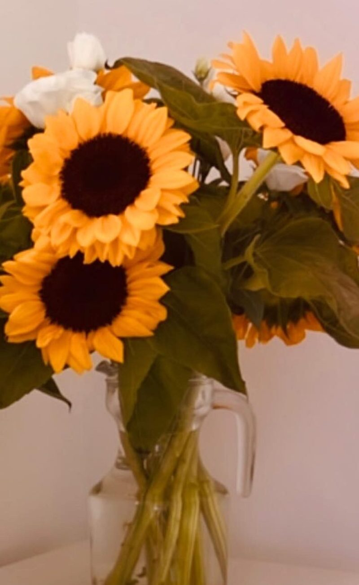

Cooperativa sociale · Crotone
Accanto a ogni donna.
Insieme a ogni bambin3.
Dal 2009 a Crotone: accoglienza in social housing, ascolto, formazione e spazi educativi. Non prendiamo in carico, ma prendiamo a cuore.

I nostri spazi
Luoghi aperti, a Crotone, per chi ne ha bisogno.

DaMe
Social housing per donne, anche con figli

Zia Mariù
Spazio educativo 0-17 e centro estivo

Civico D
Ascolto, supporto e orientamento per donne

Casa del Quartiere
Spazi, corsi, coworking ed eventi per tutt3

Ostello sociale
Ospitalità per giovani, gruppi e volontari
Il nostro approccio
Intersezionale
Rispondiamo alle tante identità e storie di ciascuna persona, senza lasciare indietro nessuna.
Olistico
Un percorso multidisciplinare verso l'autonomia fisica, economica, emotiva e sociale.
Diretto
Ci facciamo trovare in modo veloce, informale e sicuro, senza burocrazia.
Collettivo
Discriminazioni, fragilità e violenza sono responsabilità di tutt*.
Chi siamo
Una cooperativa under-35 a maggioranza femminile
Kairos Impresa Sociale progetta e opera a livello locale e nazionale in ambito sociale ed educativo. Dal 2018 abbiamo scelto la strada del sostegno alla persona, con il supporto di istituzioni ed enti privati che hanno creduto nella nostra missione.
Oggi siamo donne, giovani, famiglie, professionisti, rete sociale e progetti per cambiare la cultura e la vita quotidiana delle persone.
La nostra storia
La felicità è vera solo se condivisa.
La tua donazione sostiene l'accoglienza di donne e bambin3, i percorsi di uscita dalla violenza e l'autonomia.